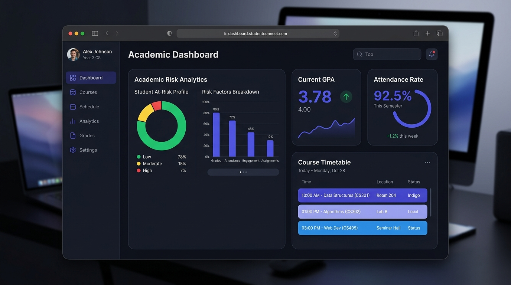

Featured Project
EduTrack — Student Academic Dashboard
EduTrack is a modern student academic dashboard designed to organize academic information, assignments, schedules, grades, attendance, notifications, and student activities in one intuitive interface.
React
Vite
Tailwind CSS
JavaScript